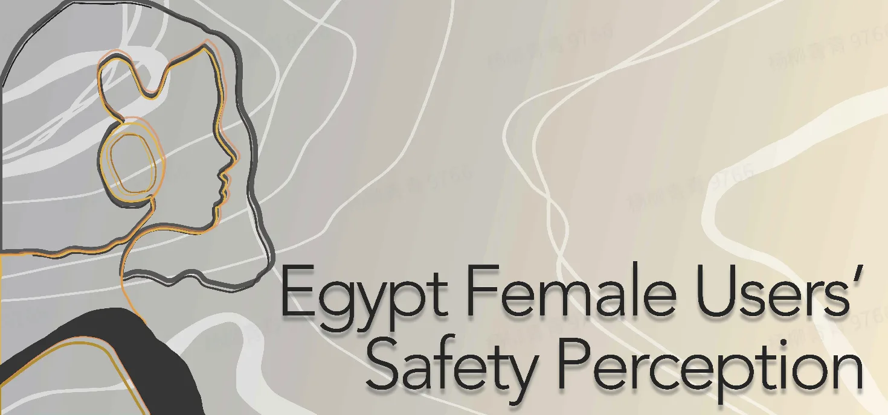

Egypt Safety Perception Survey Insights from Female Users' Perspective
The in-app survey for Egypt(conducted in Sep 2020) busted the myth that how user safety perceptions and experiences can impact their behavior on the platform. The data indicates hostile interactions are likely to make female users delete or set their videos private and further damage the foundation of a creative and diverse community.
"Bullying and harassment" is the top issue users are most concerned about in Egypt. Female users value friendly community atmosphere even more, and regard "I am not bullied or harassed online" as the most important factor to make them feel safe online. On the other hand, bullying is the most problematic issue on trending videos and comment sections(Top 1 issue reported by women)
"Bullying and harassment" is the top issue users are most concerned about in Egypt. Female users value friendly community atmosphere even more, and regard "I am not bullied or harassed online" as the most important factor to make them feel safe online. On the other hand, bullying is the most problematic issue on trending videos and comment sections(Top 1 issue reported by women)

Safety concerns mentioned above do impact female users' behavior on our platform, especially the willingness to create and share. The rates of self-deletion and setting videos private are much higher for female users according to backend data analysis, which can be mainly attributed to hostile comments and personal privacy concerns(significantly higher than male users), apart from common concerns of "video not worth sharing" and "real-world threats"

Hence, we suggest to enhance our capabilities to identify specific bullying and harassment expressions against women (e.g. body shame, sexual harassment), and improve user awareness of our efforts on protecting data security and privacy. Through female users are more vulnerable to issues mentioned above, our efforts will be beneficial to all users on the platform.